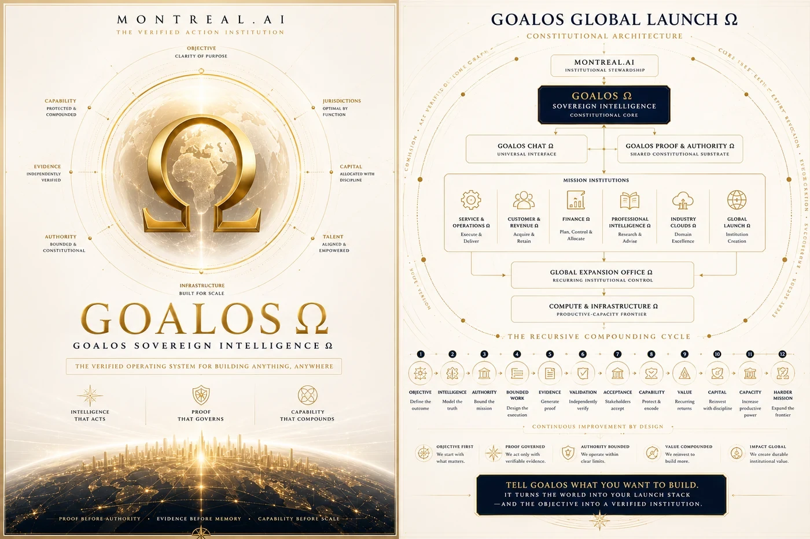

Executive MasterClass
From AI Output to Proof-Carrying Capability.
Principle
Founded in Montréal · 2003 · Founder-controlled
Understand the machine. Design the mission. Inspect the proof.
GoalOS MasterClasses combine doctrine, autonomous demonstrations, mission design, proof economics, Skill Graph, governed RSI and partnership formation—without simulating external validation or live production authority.
Not a presentation. An inspectable teaching institution.
Editions
Each edition has a distinct scope and audience. Historical links remain preserved where available.
Beyond Agents: The Proof-Gated Intelligence Institution.
Enter →From AI Output to Proof-Carrying Capability.
PrincipleObjective → Mission Contract → Proof Debt → AGI Jobs → ProofBundles → Chronicle → Mission 2.
Enter →▤04Interactive institution for proof-gated AI, AGI Nodes, Merkle memory and governed RSI.
Enter →▤05Boardroom theatre, dynamic AI council, proof missions and successor transfer.
Enter →▤06Executive theatre, operational education, diligence and partnership formation.
Enter →▤07Three-minute executive demonstration of autonomous work earning authority.
Enter →▤08Equal constraints, fresh-task transfer and three independent in-browser replays.
Enter →Learning outcome
A participant should be able to distinguish output, work, evidence, validation, acceptance, memory, settlement and improvement—and apply the separation to a real objective.
Source traceability
This page synthesizes the records below without converting publication into external validation or production outcome.
AI can answer. Agents can act. Institutions must prove. Introducing GoalOS Frontier MasterClass: "Beyond Agents: The Proof-Gated Intelligence Institution." How autonomous work earns authority, memory, settlement—and the right to i
Open record →17AI generates answers. Executives need decisions they can inspect, challenge, and govern. Introducing the GoalOS Executive MasterClass: From AI Output to Proof-Carrying Capability. Objective → proof → decision → reusable institutio
Open record →21AI demos usually end at output. GoalOS begins where they stop: authority. Introducing the GoalOS Partner MASTERCLASS — Autonomous Protocol Theatre: Complete Standalone Edition. A cinematic, interactive, self-contained, offline ins
Open record →23Introducing GoalOS Partner MASTERCLASS — the interactive institution for proof-gated AI, AGI Nodes, Chronicle, Validated Skills, Merkle memory & governed RSI. Bring one consequential objective. Leave with proof—and a capability th
Open record →24Introducing the GoalOS Partner MASTERCLASS — Magnum Opus Edition. Boardroom theatre. Dynamic AI Council. Governed RSI. Proof Missions. Cryptographic verification. Mission 2 transfer. Not a deck—a partner operating institution for
Open record →25The GoalOS Partner MASTERCLASS — Grand Institutional Edition A sovereign-signature, boardroom-grade partner institution combining executive theatre, operational education, live mission design, dynamic AI deliberation, governed rec
Open record →26The GoalOS Partner Room AI capability is becoming abundant. Institutional permission to rely on it is not. GoalOS makes autonomous work earn authority. Run the 3-minute executive demonstration: https://montrealai.github.io/goalos-
Open record →The demonstration explains the protocol. Only an external sponsor, budget, data, execution, validators and acceptance can produce customer proof.